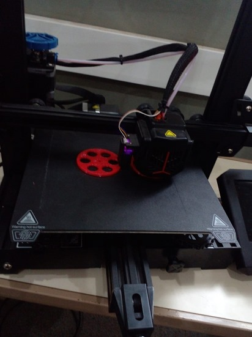

Historia
JUNIO
Sincronización de sensores
El dia martes 4/06 se realizo la primer prueba de la sincronización de ambos sensores (flama y gas) para lograr la activación del servomotor y el monitoreo de datos.
En esta imagen observamos la conexión entre ambos sensores y el servo hacia la arduino.
Impresion 3D
El día lunes 06/05 procedimos a modelar el ejemplo que obtuvimos en 3D; Las ruedas del prototipo deseado, buscando un diseño simple pero eficaz, que nos diera resistencia y sean factibles a la hora de la prueba los diferentes terrenos. Después de la calibración con el modelo PIRAMIDAL y un llavero de ejemplo pudimos obtener una buena terminación tanto térmica como lineal de la impresión, Aparte hemos probado diferentes filamentos, tamaños, y diseños. Nuestro grupo manejó el diseño para el curso, administrando diferentes modelos tanto de ruedas como partes necesarias para la competencia. Usamos la aplicación de diseño e impresión CREALITY PRINT, con la máquina shenzen un modelo de impresión parecido a la Ender 3.
JULIO
Simulacion de prototipo
Se intentó simular el comportamiento y mecanismo de la bomba de agua (ya que aún no se consiguieron estos elementos) con un Fan cooler de pc, dado a que este solo funciona mediante 12v y con elementos extras a los que tenemos no pudo avanzar en el plano físico del hardware por lo que decidió intentar el la pagina de TINKERCARD donde utilice:
Soldadura
Aca nos dedicadamos a estudiar la conexión y empezar a soldar cada componente necesario para el funcionamiento del prototipo, estudiando las conexiones pudimos resolver la falta de pines de 5v mediante conexiones en serie de algunos componentes pero antes teníamos que soldarlos, a la hora de querer empezar a soldar los sensores de flama en serie para alimentarlos a todos de una sola forma , nos encontramos con que nos era imposible que el estaño se quedará sujetado en la entrada del sensor por lo que después de intentos con diferentes soldadores y diferentes estaños tomamos la decisión de comprar flux o pasta para soldar, al otro dia fuimos a realizar la compra de la misma y empezamos a probar soldaduras externas al ver que si funcionaba empezamos a realizar la conexión, esta fue un éxito.
AGOSTO
Motorreductores
empezamos a resolver algunas cuestiones con los motorreductores(ya que nos llegaron los motores de 5v), pero no contabamos con sus cajas reductoras, buscando entre materiales y reciclados pudimos encontrar 2 de estos modelos amarillos pero a uno le faltaban engranajes, asi que teniamos 2 opciones imprimirlos o buscar en las cajas viejas, fuimos pruimero por imprimirlos pero no conseguimos un archivo exacto para el tamaño correcto de reducir y antes de ponernos a diseñar decidimos buscar en la caja de cosas viejas, donde por suerte si encontramos engranajes que dieron justo con la circunferencia necesaria para dar las vueltas y disminuir la velocidad del motor, asi que nos pusimos a armarlos y dejarlos para su uso.
Bomba de agua
Con la bomba de agua no tuvimos tantos problemas, en primer lugar decidimos adaptarles unos cables para poder facilitar la conexión a la arduino (o cualquier componente eléctrico), después iniciamos la prueba de la misma con una manguera de nebulización y efectivamente se comprobó que andara.
Ahora nos quedaba conectar el modulo relay a la bomba a la arduino y a las baterías para que esta funcionase de la forma correcta , cuando quisimos conectar la batería de 9v no encendia , pensamos que al ser mucha tensión esta no iba a prender asi que cambiamos la bateria a 3 pilas de () asi dando menos tensión a la bomba y que esta encienda de igual manera, dsp mediante software le indicamos al modulo relay que encendía para que la bomba quede en funcionamiento 3s este resultó con éxito
SEPTIEMBRE
Funcionamiento de Sistemas
Después de que la conexión relay-bomba fuera exitosa decidimos incorporar el funcionamiento del sistema antiincendios así que nos encargamos de la electrónica y las conexiones de este, teniendo la experiencia de Talamo pudimos hacer una conexión efectiva de los componentes sin que estos se comportan de manera extraña, la lógica que necesitábamos era que al detectar fuego los sensores mandan una señal a la arduino la arduino espere 3s par mandarle la señal de encendido al relay y este prenda la bomba durante 3s. Despues del exito con la bomba de agua decidimos realizar la conexión con los sensores, donde usamos el relay en el pin 12, y los sensores en el 4, 5 y 6; un problema que se nos presentó fue la sensibilidad de los sensores esto nos retrasó unos minutos ya que buscamos una equivalencia entre ellos, después de hacer eso segui con el código de prueba el cual debía detectar fuego esperar 3 segundos y encender la bomba 3 segundos

Radio control
Necesitábamos una solución rápida por lo cual Lautaro encontró el juguete a radio control viejo que tenia pero estaba roto tanto el auto como el control, entonces desarmamos las piezas del juguete y lo juntamos con la parte de atrás de otro, se soldó un capacitor que no estaba y tmb conectamos una extensión para poder hacer andar el mismo, después en el tema del control del radio necesitábamos soldar la antena pero no teníamos una, buscamos una radio vieja y tuvimos que adaptar el agarre del mismo dsp arreglamos la carcasa y limpiamos un poco la placa, pegamos estas partes debajo de la base del prototipo y arreglamos la carcasa del control dando efectivo el funcionamiento de este, en la carpeta de campo se encuentran videos demostrando su funcionamiento, detectando y extinguiendo el fuego. Ahora tenemos que hacer funcionar la lectora de SIM así poder realizar la llamada cuando se detecte fuego o detecte gas, tenemos que soldar los pines a la placa del lector así mismo su antena y dsp regular la frecuencia a 3v para evitar una sobrecarga en el, mientras tanto solo tenemos el funcionamiento principal del prototipo si llegamos con el tiempo quizás diseñemos una carcasa, en la carpeta de recursos estan los videos demostrando el funcionamiento del mismo.